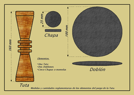
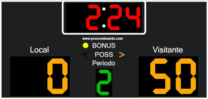

El terreno de juego es llano de tierra apisonada batida.

Se coloca la tanga en el centro de la línea de fondo.
Las medidas de la tanga son: 170mm de alto, 40mm de diámetro y 28mm en el cuello
Los equipos son de dos jugadores.

El orden de tirada se elige por sorteo.

Se hacen 16 tiradas por equipo, con dos tostones por cada una.
El tiempo de juego lo determinan el número de tiradas.

Un jugador puede obtener un máximo de 8 puntos por tirada.
Sobrepasar o pisar la línea de tiro anula la jugada.

Las categorías son establecidas en las bases de Competición. La máxima categoría se denomina ESPECIAL.

Hay dos jueces: principal y auxiliar.

Las medidas y peso del terreno y tostones varían en función de la categoría.